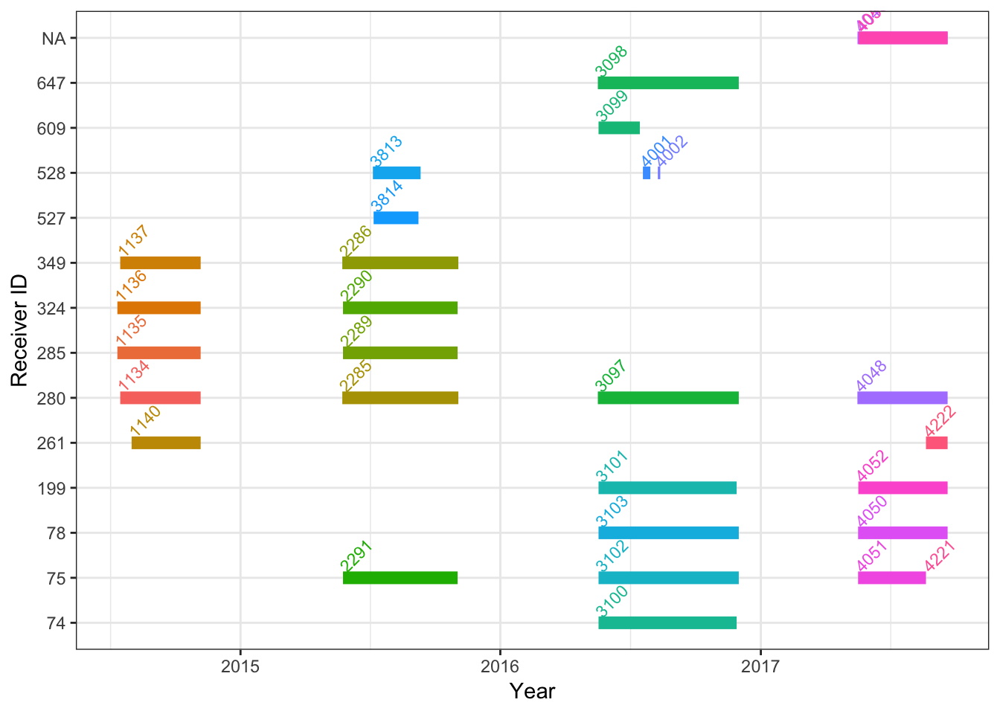
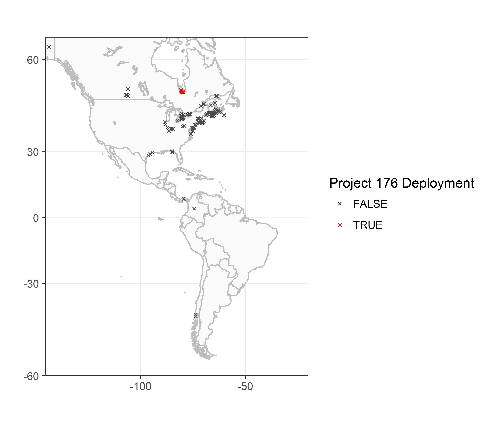

4 Déploiements d’émetteurs et de récepteurs
Avant de travailler avec vos données de détection, il convient d’abord de résumer et de visualiser les métadonnées relatives aux déploiements des émetteurs et des récepteurs enregistrés dans le cadre de votre projet. La production de sommaires, de graphiques et de cartes des données sur vos déploiements peut permettre de trouver des erreurs possibles dans les métadonnées sur les émetteurs et les récepteurs. De telles erreurs peuvent faire en sorte que les données de détection recueillies dans le cadre de votre projet soient incomplètes, tout comme les projets d’autres chercheurs dont des émetteurs ont été détectés par vos récepteurs.
Le présent chapitre est un complément de la page sur les problèmes de données du site Web de Motus, qui présente pour chaque projet une liste des problèmes touchant les métadonnées (valeurs manquantes ou aberrantes), problèmes qu’il faut accepter ou ne pas prendre en compte. Veuillez traiter toutes les erreurs associées à votre projet qui sont indiquées dans la page des problèmes de données avant d’importer vos données par l’intermédiaire de R. Les indications fournies ici ne permettent pas de faire une vérification complète des métadonnées sur les déploiements de vos émetteurs et récepteurs, mais elles aideront à déceler les erreurs que les interrogations automatiques sur la page des problèmes de données n’ont pas permis de trouver.
Nous utilisons l’ensemble de données du Programme de suivi des oiseaux de rivage de la baie James (projet 176) à titre d’exemple tout au long du présent chapitre (voyez la section 1.3). Pendant que vous parcourez le code pour examiner vos propres déploiements, **si vous trouvez des erreurs ou des omissions dans vos métadonnées, veuillez les corriger; pour ce faire, rendez-vous à la page https://motus.org/.** Cliquez sur l’option «Gérer les données» et dans le menu, choisissez «Gérer vos émetteurs» pour corriger les métadonnées sur les déploiements d’émetteurs ou «Gérer vos récepteurs» pour corriger les métadonnées sur les récepteurs. Il est important de corriger en ligne les erreurs dans les métadonnées; ainsi, les erreurs sont corrigées à la source et les données corrigées sont archivées dans le serveur de Motus, de sorte que tous les utilisateurs ont accès aux métadonnées correctes sur les émetteurs et les récepteurs. Les métadonnées corrigées en ligne seront automatiquement corrigées dans vos fichiers de données de détection. Si vous avez déjà téléchargé vos données de détection, vous pouvez mettre à jour le fichier existant afin d’inclure les nouvelles métadonnées et données de détection (voyez les sections 3.7.2 et ??).
4.1 Chargement des logiciels R pertinents et réglage de l’environnement de travail
Avant de commencer à travailler avec des données, il faut charger les logiciels requis pour les opérations expliquées dans le présent chapitre. Si vous n’avez pas encore installé ces logiciels (à partir de github et de CRAN), retournez au chapitre 2 pour le faire.
library(tidyverse)
library(tidyr)
library(motus)
# Réglez le fuseau horaire de l'environnement
# système au temps universel coordonné (UTC), pour
# vous assurer de toujours travailler à cette
# échelle de temps.
Sys.setenv(TZ = "GMT")4.2 Chargement du fichier .motus
Dans le présent chapitre, il est tenu pour acquis que vous avez déjà téléchargé le fichier .motus. Si ce n’est pas le cas, retournez au chapitre 3, qui présente la marche à suivre pour ce faire. Pour mettre à jour le fichier existant et le charger dans R, utilisez la fonction tagme(); pour ce faire, il se peut que vous ayez à ouvrir une session tel qu’indiqué dans le chapitre précédent en entrant votre nom d’utilisateur et le mot de passe «motus.sample».
proj.num <- 176
sql.motus <- tagme(proj.num, update = TRUE, dir = "./data")4.3 Déploiements d’émetteurs
Dans votre fichier .motus, lorsque vous utilisez la fonction tagme(), vous obtenez seulement les métadonnées sur tous les émetteurs dont les signaux ont été détectés dans le cadre de votre projet ainsi que les métadonnées sur les émetteurs ambigus associés dont les signaux ont été détectés dans le cadre d’autres projets et les métadonnées sur les récepteurs des stations où des signaux de vos émetteurs ont été détectés. Ici, nous:
- téléchargerons les métadonnées complètes sur les émetteurs pour votre projet seulement;
- déterminerons combien d’émetteurs sont enregistrés dans le cadre de votre projet;
- déterminerons combien de ces émetteurs enregistrés ont été déployés;
- localiserons les émetteurs déployés;
- vérifierons si les métadonnées sur les déploiements d’émetteurs sont complètes et exactes.
Voyons maintenant chacune de ces opérations dans l’ordre.
4.3.1 Téléchargement des métadonnées complètes sur les émetteurs pour votre projet
Si les métadonnées sont incomplètes ou s’il manque des enregistrements d’émetteurs, il se peut qu’il manque des données de détection. Il faut donc vérifier si tous les émetteurs enregistrés pour votre projet sont pris en compte et pas seulement ceux dont des signaux ont été détectés. Pour ce faire, nous utiliserons la fonction metadata() pour le projet 176, dont il est question plus en détail dans la section 3.7.3.
metadata(sql.motus, projectIDs = proj.num)4.3.2 Détermination du nombre d’émetteurs enregistrés
Maintenant que nous avons l’ensemble des métadonnées sur les émetteurs pour notre projet, nous pouvons vérifier le nombre d’émetteurs enregistrés en chargeant la table «tags» dans le fichier .motus. Cette table contient les métadonnées sur chaque émetteur enregistré, dont son identifiant unique et de l’information sur le fabricant, le modèle, les fréquences nominale et décalée, la cadence d’émission et la durée de l’impulsion. La table «tags» ne fournit pas d’information sur le déploiement des émetteurs. Nous choisissons les métadonnées propres au Programme de suivi des oiseaux de rivage de la baie James (projet 176) et ne tenons pas compte des métadonnées associées à de possibles émetteurs en double utilisés pour d’autres projets:
tbl.tags <- tbl(sql.motus, "tags")
df.tags <- tbl.tags %>% filter(projectID == proj.num) %>%
collect() %>% as.data.frame()Le nombre de lignes dans la base de données «df.tags» équivaut au nombre d’émetteurs dans l’ensemble de données du Programme de suivi des oiseaux de rivage de la baie James qui sont enregistrés (projet 176; 18 émetteurs):
nrow(df.tags) # Nombre d'émetteurs enregistrés dans la base de données## [1] 18Vous pouvez voir les identifiants des émetteurs (motusTagID):
unique(df.tags$tagID)## [1] 16011 16035 16036 16037 16038 16039 16044 16047 16048 16052 17357
## [12] 19129 22867 22897 22902 22905 23316 23319Si des émetteurs enregistrés sont manquants, suivez les instructions fournies à https://motus.org/tag-registration/?lang=fr.
4.3.3 Détermination du nombre d’émetteurs enregistrés qui ont été déployés
Pour vérifier quels émetteurs enregistrés ont été déployés, il faut utiliser la table de métadonnées «tagDeps» qui se trouve dans le fichier .motus. Cette table indique la date, l’heure et le lieu du déploiement ainsi que le nom d’espèce de l’animal portant l’émetteur. La base de données se rapporte au projet 176, et nous utilisons la fonction anti_join afin de déterminer pour quels émetteurs enregistrés il existe (ou n’existe pas) d’information sur le déploiement.
tbl.tagDeps <- tbl(sql.motus, "tagDeps")
df.tagDeps <- tbl.tagDeps %>%
filter(projectID == proj.num) %>%
collect() %>%
as.data.frame() %>% # dans le format df, les dates peuvent être formatées avec le logiciel lubridate
mutate(tsStart = as_datetime(tsStart, tz = "UTC", origin = "1970-01-01"),
tsEnd = as_datetime(tsEnd, tz = "UTC", origin = "1970-01-01"))
anti_join(df.tags, df.tagDeps, by = "tagID") ## [1] tagID projectID mfgID type codeSet
## [6] manufacturer model lifeSpan nomFreq offsetFreq
## [11] bi pulseLen
## <0 rows> (or 0-length row.names)Dans les données du programme de la baie James, il n’y a pas de métadonnées sur les déploiements manquantes pour les émetteurs enregistrés, ce qui porte à croire que tous les émetteurs ont été déployés. Si vous avez des émetteurs non déployés dans vos propres fichiers, vérifiez si c’est bien le cas dans vos dossiers; sans les métadonnées sur les déploiements, les données de détection reliées aux émetteurs enregistrés mais non déployés seront manquantes dans votre base de données de détection.
4.3.4 Détermination du nombre de déploiements par émetteur
Un émetteur peut être déployé plus d’une fois. Par exemple, un émetteur déjà déployé peut avoir été récupéré puis déployé de nouveau sur un autre animal. Quand un émetteur est déployé plus d’une fois, les données de détection doivent être considérées indépendamment pour chaque déploiement.
Tout au long du présent guide, nous utilisons «motusTagID» comme identifiant unique pour un déploiement. Toutefois, lorsqu’un émetteur est déployé plus d’une fois, l’identifiant «motusTagID» demeure inchangé d’un déploiement à l’autre. Il faut utiliser «tagDeployID» ou une combinaison de «motusTagID» et de «tagDeployID» pour distinguer les détections propres à chaque déploiement.
Vérifions s’il y a plus d’un déploiement pour des émetteurs dans les données du programme de la baie James (en réalité, il n’y a pas de cas de plus d’un déploiement) puis voyons comment créer une variable combinée tagID/deployID pour l’utiliser à la place de l’identifiant «motusTagID» dans l’éventualité où il y aurait plus d’un déploiement d’un émetteur dans vos propres données:
df.alltags %>%
select(motusTagID, tagDeployID) %>%
filter(!(is.na(tagDeployID))) %>% # Enlever NA tagDeployID.
distinct() %>%
group_by(motusTagID) %>%
mutate(n = n()) %>%
filter(n > 1)## # A tibble: 0 x 3
## # Groups: motusTagID [0]
## # ... with 3 variables: motusTagID <int>, tagDeployID <int>, n <int>Si vous avez plus d’un déploiement pour un émetteur, nous vous recommandons de créer une variable combinée «motusTagDepID», que vous utiliserez à la place de «motusTagID» pour définir un déploiement unique d’un émetteur. Tout au long du présent guide, vous remplacerez donc «motusTagID» par «motusTagDepID»:
df.alltags <- df.alltags %>% mutate(motusTagDepID = paste(motusTagID,
tagDeployID, sep = "."))
# et faire de même pour les métadonnées sur les
# émetteurs
df.tagDeps <- df.tagDeps %>% mutate(motusTagDepID = paste(tagID,
deployID, sep = "."))4.3.5 Localisation des émetteurs déployés
La production d’une carte indiquant les lieux où vos émetteurs ont été déployés peut permettre de détecter d’éventuelles erreurs évidentes dans les indications des degrés de latitude ou de longitude que les interrogations effectuées en ligne au centre de messages sur les métadonnées n’auraient pas permis de saisir.
a. Chargement des fichiers de cartes de base
Chargez les fichiers de cartes de base à partir du logiciel rworldmap:
na.lakes <- map_data(map = "lakes")
na.lakes <- mutate(na.lakes, long = long - 360)
# Incluez l'ensemble des Amériques pour commencer.
na.map <- map_data(map = "world2")
na.map <- filter(na.map, region %in% c("Canada", "USA"))
na.map <- mutate(na.map, long = long - 360)
# Selon la position, vous voudrez peut-être
# localiser des émetteurs dans d'autres pays des
# Amériques: «Mexico», «lakes»,«Belize», «Costa
# Rica», «Panama», «Guatemala», «Honduras»,
# «Nicaragua», «El Salvador», «Colombia»,
# «Venezuela», «Ecuador», «Peru», «Brazil»,
# «Guyana»,«Suriname», «Bolivia», «French Guiana»,
# «Jamaica», «Cuba», «Haiti», «Dominican Republic»,
# «The Bahamas», «Turks and Caicos Islands»,
# «Puerto Rico», «British Virgin Islands»,
# «Montserrat», «Dominica», «Saint Lucia»,
# «Barbados», «Grenada», «Trinidad and Tobago»,
# «Chile», «Argentina», «Uruguay»b. Pointage des positions des émetteurs déployés
Pointez les positions des émetteurs déployés à partir des données du programme de la baie James (projet 176):
# Fixez des limites à la carte en fonction des
# positions des détections, en vous assurant que la
# carte englobe ces positions.
xmin <- -100 #min(df.tagDeps$longitude, na.rm = TRUE) - 5
xmax <- max(df.tagDeps$longitude, na.rm = TRUE) + 5
ymin <- min(df.tagDeps$latitude, na.rm = TRUE) - 5
ymax <- max(df.tagDeps$latitude, na.rm = TRUE) + 5
# Pointez en utilisant ggplot.
ggplot(na.lakes, aes(long, lat)) + geom_polygon(data = na.map,
aes(long, lat, group = group), colour = "grey",
fill = "grey98") + geom_polygon(aes(group = group),
colour = "grey", fill = "white") + coord_map(projection = "mercator",
xlim = c(xmin, xmax), ylim = c(ymin, ymax)) + xlab("") +
ylab("") + theme_bw() + geom_point(data = filter(df.tagDeps,
projectID == 176), aes(longitude, latitude), cex = 2,
pch = 1, colour = "red")
S’il y a une erreur dans la position d’un émetteur déployé, veuillez la corriger en ligne à https://motus.org/data/.
4.3.6 Vérification de la complétude et de l’exactitude des métadonnées sur les déploiements d’émetteurs
Les métadonnées sur les émetteurs requises sont les suivantes : date/heure du début du déploiement, date/heure de la fin du déploiement (s’il y a lieu), latitude, longitude et espèce. L’absence d’information - en particulier les dates et les heures et les latitude et longitude - peut influer sur la durée de vie estimée de l’émetteur en cause; par conséquent, il faudra se demander si tagFinder «cherchera» l’émetteur au(x) moment(s) approprié(s). Cela peut aussi accroître le risque d’ambiguïtés causées par l’existence d’émetteurs en double dans le réseau.
a. Vérifier les gammes de valeurs des métadonnées
Tout d’abord, il faut utiliser le sommaire (df.tagDeps) pour avoir une idée de la gamme des valeurs de chaque variable et pour vérifier s’il manque des valeurs (NA) ou s’il y a des valeurs aberrantes pour une ou des variables. Nous présentons ci-dessous le résumé d’un sous-ensemble des variables dans la base de données df.tagDeps. Il faut répondre à plusieurs questions: est-ce que la plage des valeurs des dates du début et de la fin du déploiement est raisonnable pour vos déploiements? y a-t-il des erreurs évidentes dans les dates et les heures des déploiements? est-ce que la gamme des latitudes et longitudes est raisonnable? est-ce que les valeurs identifiant les espèces sont correctes?
df.tagDeps %>% select(tagID, projectID, tsStart, tsEnd,
speciesID, latitude, longitude) %>% summary()## tagID projectID tsStart
## Min. :16011 Min. :176 Min. :2015-08-02 11:40:00
## 1st Qu.:16038 1st Qu.:176 1st Qu.:2015-08-13 15:25:00
## Median :16050 Median :176 Median :2015-09-10 17:50:30
## Mean :18616 Mean :176 Mean :2016-01-24 12:49:36
## 3rd Qu.:22890 3rd Qu.:176 3rd Qu.:2016-09-25 15:34:15
## Max. :23319 Max. :176 Max. :2016-10-15 16:00:00
## tsEnd speciesID latitude
## Min. :2015-12-17 11:40:00 Min. :4180 Min. :50.19
## 1st Qu.:2015-12-28 15:25:00 1st Qu.:4670 1st Qu.:50.52
## Median :2016-03-10 17:50:30 Median :4690 Median :51.48
## Mean :2016-07-28 18:09:36 Mean :4674 Mean :51.18
## 3rd Qu.:2017-06-06 09:53:45 3rd Qu.:4690 3rd Qu.:51.48
## Max. :2017-06-26 16:00:00 Max. :4820 Max. :51.80
## longitude
## Min. :-80.69
## 1st Qu.:-80.45
## Median :-80.45
## Mean :-75.85
## 3rd Qu.:-67.92
## Max. :-63.75Il ne manque pas de dates de début (tsStart), et les dates de début des déploiements vont de 2015 à 2016, ce qui est raisonnable pour ce projet.
Les identifiants d’espèces sont numériques et n’ont pas de signification particulière si l’on ne peut pas leur attribuer chacun un nom d’espèce, ce que nous ferons ci-après. Dans le cas présent, il n’y a pas de valeurs manquantes.
b. Vérifier que les identifiants d’espèces concordent avec vos données
La table ‘species’ dans le fichier .motus associe chaque identifiant numérique d’espèce à un nom commun anglais, un nom commun français et un nom scientifique. Nous chargeons cette table et l’intégrons comme sous-ensemble de la suite d’identifiants numériques dans les métadonnées sur les émetteurs:
# Générez la liste des identifiants d'espèces dans
# les métadonnées du projet 176.
sp.list <- unique(df.tagDeps$speciesID)
# Métadonnées sur les espèces
tbl.species <- tbl(sql.motus, "species")
tbl.species %>% filter(id %in% sp.list) %>% collect() %>%
as.data.frame()## id english french
## 1 4180 Semipalmated Plover Pluvier semipalmé
## 2 4670 Red Knot Bécasseau maubèche
## 3 4680 Sanderling Bécasseau sanderling
## 4 4690 Semipalmated Sandpiper Bécasseau semipalmé
## 5 4760 White-rumped Sandpiper Bécasseau à croupion blanc
## 6 4780 Pectoral Sandpiper Bécasseau à poitrine cendrée
## 7 4820 Dunlin Bécasseau variable
## scientific group sort
## 1 Charadrius semipalmatus BIRDS NA
## 2 Calidris canutus BIRDS NA
## 3 Calidris alba BIRDS NA
## 4 Calidris pusilla BIRDS NA
## 5 Calidris fuscicollis BIRDS NA
## 6 Calidris melanotos BIRDS NA
## 7 Calidris alpina BIRDS NACette opération génère la liste de toutes les espèces incluses dans les métadonnées sur les déploiements d’émetteurs pour le projet. Si des noms d’espèces sont inappropriés, cela s’explique probablement par une erreur de saisie de données au moment de l’attribution d’un déploiement à une espèce. Vous pouvez chercher les enregistrements dans vos métadonnées sur les émetteurs en utilisant le code suivant; ensuite, vous utilisez la variable deployID associée à l’entrée ou aux entrées pour trouver et mettre à jour en ligne l’enregistrement du déploiement dans vos métadonnées sur le projet:
filter(df.tagDeps, speciesID == 4780)## deployID tagID projectID status tsStart tsEnd
## 1 10517 22867 176 <NA> 2016-09-06 15:35:00 2017-05-18 15:35:00
## deferSec speciesID bandNumber markerNumber markerType latitude longitude
## 1 NA 4780 <NA> 2641-20877 metal band 51.79861 -80.69139
## elevation
## 1 NA
## comments
## 1 Sex:F, Age:HY, Bill28, Tarsus:26.2, Wing Chord:123, Wing Flat:129, Mass:57.7, Flag: (FEW)7P6, Blood:Y, Canada, Ontario, James Bay, LONGRIDGE, Comments: REKN tag on mesh; has a duplicate tag same burst rate 380-272 a HY REKN banded at Mingan Islands on 02-Oct-2016 and band number 9822-53171\n
## id bi tsStartCode tsEndCode fullID
## 1 NA NA 1L 3L SampleData#272.1:5.3@166.38(M.22867)
## motusTagDepID
## 1 22867.10517Rappelez-vous que les corrections des métadonnées doivent être apportées en ligne.
4.4 Vérification des métadonnées sur les récepteurs
Il existe deux sources de métadonnées sur les récepteurs dans les données de détection Motus: les récepteurs enregistrés dans le cadre de votre projet et les récepteurs enregistrés dans le cadre de projets d’autres chercheurs. Vous pouvez accéder aux métadonnées sur tous les récepteurs du réseau, car les données négatives (par exemple, mon émetteur n’a pas été détecté à la station x même si cette station était active) sont souvent aussi importantes que les données positives. Cela vous permet aussi de connaître les positions où vos émetteurs ont été détectés par rapport à la répartition de l’ensemble des récepteurs partout dans le réseau Motus.
Les erreurs ou les omissions touchant les métadonnées sur les récepteurs que vous détectez dans votre fichier .motus peuvent être corrigées seulement pour les récepteurs enregistrés dans le cadre de votre propre projet.
Les utilisateurs de Motus sont encouragés à entrer des métadonnées sur les récepteurs complètes et exactes pour le bénéfice de l’ensemble des utilisateurs du réseau. Si vous prévoyez d’avoir besoin d’information spécifique sur le déploiement de récepteurs ou d’antennes à des stations déployées par d’autres chercheurs, vous pouvez utiliser le forum de Motus (https://motus.org/discussion/) pour demander que ces derniers enregistrent l’information sur le déploiement dont vous avez besoin. Vous devez indiquer avec précision l’information qui vous intéresse et indiquer également quand et où dans le réseau vos émetteurs seront déployés et éventuellement détectés. Ici, nous:
- téléchargerons les métadonnées complètes sur les récepteurs dans l’ensemble du réseau;
- déterminerons combien de récepteurs sont enregistrés dans le cadre de votre projet;
- déterminerons à quel(s) moment(s) les récepteurs enregistrés dans le cadre de votre projet ont été déployés;
- localiserons les récepteurs déployés dans tout le réseau et dans le cadre de votre projet;
- vérifierons si les métadonnées sur les déploiements de récepteurs sont complètes et exactes.
4.4.1 Téléchargement des métadonnées sur tous les récepteurs dans le réseau
Plus loin dans le présent chapitre, nous produirons la carte indiquant la position de tous les récepteurs dans le réseau. Nous chargerons donc maintenant les métadonnées relatives à tous les projets plutôt que seulement celles propres au projet 176 comme nous l’avons fait précédemment. La fonction metadata() est décrite plus en détail dans la section 3.7.3.
metadata(sql.motus)4.4.2 Détermination du nombre de récepteurs déployés dans le cadre de votre projet
Pour savoir quels récepteurs déployés sont enregistrés dans le cadre de votre projet (s’il y en a), importez les données sur les déploiements et faites-en un sous-ensemble de données et un sommaire:
tbl.recvDeps <- tbl(sql.motus, "recvDeps")
df.projRecvs <- tbl.recvDeps %>% filter(projectID ==
proj.num) %>% collect() %>% as.data.frame() %>%
mutate(tsStart = as_datetime(tsStart, tz = "UTC",
origin = "1970-01-01"), tsEnd = as_datetime(tsEnd,
tz = "UTC", origin = "1970-01-01"))
summary(df.projRecvs)## deployID serno receiverType deviceID
## Min. :1134 Length:29 Length:29 Min. : 74.0
## 1st Qu.:2289 Class :character Class :character 1st Qu.:138.5
## Median :3101 Mode :character Mode :character Median :280.0
## Mean :3007 Mean :290.9
## 3rd Qu.:4048 3rd Qu.:349.0
## Max. :4222 Max. :647.0
## NA's :2
## macAddress status name
## Length:29 Length:29 Length:29
## Class :character Class :character Class :character
## Mode :character Mode :character Mode :character
##
##
##
##
## siteName fixtureType latitude longitude
## Length:29 Length:29 Min. :51.15 Min. :-80.80
## Class :character Class :character 1st Qu.:51.29 1st Qu.:-80.57
## Mode :character Mode :character Median :51.48 Median :-80.45
## Mean :51.51 Mean :-80.35
## 3rd Qu.:51.66 3rd Qu.:-80.12
## Max. :51.88 Max. :-79.69
## NA's :4 NA's :4
## isMobile tsStart
## Min. :0.0000 Min. :2014-07-12 00:00:00
## 1st Qu.:0.0000 1st Qu.:2015-05-25 00:00:00
## Median :0.0000 Median :2016-05-18 00:00:00
## Mean :0.1379 Mean :2016-02-20 17:19:14
## 3rd Qu.:0.0000 3rd Qu.:2017-05-16 15:55:00
## Max. :1.0000 Max. :2017-08-20 23:30:00
##
## tsEnd projectID elevation
## Min. :2014-11-06 00:00:00 Min. :176 Min. :-7
## 1st Qu.:2015-09-09 12:00:00 1st Qu.:176 1st Qu.:-4
## Median :2015-11-03 00:00:00 Median :176 Median :-4
## Mean :2016-02-22 05:38:15 Mean :176 Mean : 3
## 3rd Qu.:2016-11-29 12:00:00 3rd Qu.:176 3rd Qu.: 0
## Max. :2017-08-20 23:30:00 Max. :176 Max. :30
## NA's :6 NA's :24Il y a 29 récepteurs déployés d’enregistrés dans le cadre du projet 176. Les valeurs de latitude et de longitude sont manquantes dans quatre cas et les valeurs des dates de fin sont manquantes dans six cas, ce qui porte à croire que les récepteurs en cause sont encore déployés.
L’opération suivante permet de conserver seulement les variables qui nous intéressent (en enlevant celles dont nous n’avons pas besoin) et structure les enregistrements restants par identifiant de récepteur, par latitude et par date de début:
df.projRecvs %>% mutate(dateStart = date(tsStart)) %>%
select(-serno, -fixtureType, -macAddress, -tsStart,
-tsEnd, -elevation, -projectID, -status, -receiverType,
-siteName) %>% arrange(deviceID, latitude,
dateStart)## deployID deviceID name latitude longitude isMobile
## 1 3100 74 Washkaugou 51.1540 -79.8144 0
## 2 2291 75 North Bluff 51.4839 -80.4500 0
## 3 3102 75 North Bluff 51.4839 -80.4501 0
## 4 4051 75 North Bluff 51.4839 -80.4501 0
## 5 4221 75 North Bluff 51.4839 -80.4501 0
## 6 3103 78 Piskwamish 51.6579 -80.5678 0
## 7 4050 78 Piskwamish 51.6580 -80.5679 0
## 8 3101 199 Netitishi 51.2912 -80.1167 0
## 9 4052 199 Netitishi 51.2913 -80.1167 0
## 10 4222 261 North Bluff 51.4839 -80.4501 0
## 11 1140 261 North Bluff 51.4840 -80.4500 0
## 12 1134 280 Longridge 51.8230 -80.6911 0
## 13 2285 280 Longridge 51.8231 -80.6912 0
## 14 3097 280 Longridge 51.8244 -80.6909 0
## 15 4048 280 Halfway Point 51.8753 -80.7973 0
## 16 1135 285 Netitishi 51.2913 -80.1167 0
## 17 2289 285 Netitishi 51.2913 -80.1168 0
## 18 2290 324 Washiskougau Creek 51.1542 -79.8145 0
## 19 1136 324 Washiskougau Creek 51.1545 -79.8137 0
## 20 2286 349 Piskwamish 51.6578 -80.5676 0
## 21 1137 349 Piskwamish 51.6582 -80.5669 0
## 22 3814 527 LR mobile NA NA 1
## 23 3813 528 NP mobile NA NA 1
## 24 4001 528 BurntPointAerial NA NA 1
## 25 4002 528 JamesBayAerial NA NA 1
## 26 3099 609 East Point 51.2301 -79.7124 0
## 27 3098 647 Halfway Point 51.8752 -80.7973 0
## 28 4053 NA East Point 51.3818 -79.6857 0
## 29 4049 NA Longridge 51.8246 -80.6909 0
## dateStart
## 1 2016-05-18
## 2 2015-05-25
## 3 2016-05-18
## 4 2017-05-17
## 5 2017-08-20
## 6 2016-05-18
## 7 2017-05-17
## 8 2016-05-18
## 9 2017-05-17
## 10 2017-08-20
## 11 2014-08-01
## 12 2014-07-16
## 13 2015-05-24
## 14 2016-05-17
## 15 2017-05-16
## 16 2014-07-12
## 17 2015-05-25
## 18 2015-05-25
## 19 2014-07-12
## 20 2015-05-24
## 21 2014-07-16
## 22 2015-07-07
## 23 2015-07-06
## 24 2016-07-19
## 25 2016-08-09
## 26 2016-05-18
## 27 2016-05-17
## 28 2017-05-18
## 29 2017-05-16Le nombre de récepteurs déployés indiqué dans les métadonnées devrait correspondre au nombre réellement déployé sur le terrain.
Si l’on examine les valeurs dans la colonne ‘isMobile’ qui correspondent aux quatre récepteurs déployés pour lesquels les valeurs de latitude et longitude sont manquantes, il est évident qu’il s’agit de récepteurs mobiles qui n’ont pas une position fixe (c.-à-d. qu’ils ont une valeur de 1). Étant donné que ces récepteurs sont mobiles, on ne s’attend pas à voir des coordonnées géographiques; l’indication demeure donc NA dans ces cas. Lorsque des coordonnées sont indiquées dans la table pour des récepteurs mobiles, celles-ci représentent le point de départ du déploiement.
4.4.3 Détermination du moment du déploiement des récepteurs dans le cadre de votre projet
L’information sur le moment des déploiements peut être affichée sous forme de graphique. Les lignes horizontales dans le graphique ci-dessous correspondent à l’intervalle de temps pendant lequel a été déployé chaque récepteur (deviceID) enregistré dans le cadre du Programme de suivi des oiseaux de rivage de la baie James (projet 176). Dans le cas des deux récepteurs pour lesquels la date de fin est manquante, le code attribue une date de fin arbitraire correspondant à la date de fin la plus éloignée parmi celles des autres récepteurs plus un mois. Sans cette opération, l’information sur les déploiements sans dates de fin ne serait pas affichée. Les périodes de déploiement d’un récepteur donné ne devraient pas se chevaucher dans le temps:
# Mettez les données dans un format long pour
# simplifier le pointage(ou utilisez geom_segment).
df.projRecvs.long <- select(df.projRecvs, deviceID,
deployID, tsStart, tsEnd) %>% tidyr::gather(when,
ts, c(tsStart, tsEnd)) %>% mutate(ts = if_else(is.na(ts),
max(ts, na.rm = TRUE) + duration(1, "month"), ts)) # fake end date
ggplot(df.projRecvs.long, aes(y = as.factor(deviceID),
x = ts, colour = as.factor(deployID))) + geom_line(lwd = 3) +
# Centrez plutôt sur la droite.
geom_text(data = filter(df.projRecvs.long, when ==
"tsStart"), aes(label = deployID), hjust = "left",
nudge_y = 0.2, size = 3, angle = 45) + theme_bw() +
ylab("Receiver ID") + xlab("Year") + theme(legend.position = "none") Si vous voulez obtenir de l’information plus détaillée pour une année donnée (ou pour toutes les années), vous pouvez générer un sous-ensemble de données et pointer celles-ci de nouveau sur un graphique ou utiliser le jour de l’année sur l’axe des x et ensuite faire la synthèse par année (facet_wrap).
ggplot(df.projRecvs.long, aes(y = as.factor(deviceID),
x = yday(ts), colour = as.factor(deployID))) +
geom_line(lwd = 3) +
# Centrez les étiquettes sur la gauche.
geom_text(data = filter(df.projRecvs.long, when ==
"tsStart"), aes(label = deployID), hjust = "left",
nudge_y = 0.4, size = 3) + theme_bw() + ylab("Receiver ID") +
xlab("Day of year") + theme(legend.position = "none") +
facet_grid(year(ts) ~ ., scales = "free")4.4.4 Localisation des récepteurs déployés
Les cartes assurent une meilleure représentation spatiale que les simples graphiques. Les opérations suivantes permettent de pointer la position des récepteurs Motus sur une carte de l’Amérique du Nord. Les récepteurs déployés dans le cadre du projet 176 (Programme de suivi des oiseaux de rivage de la baie James) sont indiqués en rouge.
a. Charger les métadonnées sur tous les récepteurs
df.recvDeps <- tbl.recvDeps %>% collect() %>% as.data.frame() %>%
mutate(tsStart = as_datetime(tsStart, tz = "UTC",
origin = "1970-01-01"), tsEnd = as_datetime(tsEnd,
tz = "UTC", origin = "1970-01-01"))b. Charger les fichiers des cartes de base
na.lakes <- map_data(map = "lakes")
na.lakes <- mutate(na.lakes, long = long - 360)
# Include all of the Americas to begin
na.map <- map_data(map = "world2")
na.map <- filter(na.map, region %in% c("Canada", "USA",
"Mexico", "lakes", "Belize", "Costa Rica", "Panama",
"Guatemala", "Honduras", "Nicaragua", "El Salvador",
"Colombia", "Venezuela", "Ecuador", "Peru", "Brazil",
"Guyana", "Suriname", "Bolivia", "French Guiana",
"Jamaica", "Cuba", "Haiti", "Dominican Republic",
"The Bahamas", "Turks and Caicos Islands", "Puerto Rico",
"British Virgin Islands", "Montserrat", "Dominica",
"Saint Lucia", "Barbados", "Grenada", "Trinidad and Tobago",
"Chile", "Argentina", "Uruguay", "Paraguay")) %>%
mutate(long = long - 360)c. Pointer sur la carte la position des récepteurs dans les Amériques Carte montrant la position des récepteurs déployés dans l’ensemble du réseau (les «x» gris foncé) et des récepteurs déployés dans le cadre du Programme de suivi des oiseaux de rivage de la baie James (projet 176; les «x» rouges).
# Fixez des limites à la carte en fonction des
# positions des détections, en vous assurant que la
# carte englobe ces positions.
xmin <- min(df.recvDeps$longitude, na.rm = TRUE) -
2
xmax <- -20 # Limitez aux Amériques (sauf quelques points en Europe).
ymin <- -60 #min(df.recvDeps$longitude, na.rm = TRUE) - 2
ymax <- max(df.recvDeps$latitude, na.rm = TRUE) + 2
# map
ggplot(na.lakes, aes(long, lat)) + geom_polygon(data = na.map,
aes(long, lat, group = group), colour = "grey",
fill = "grey98") + geom_polygon(aes(group = group),
colour = "grey", fill = "white") + coord_map(projection = "mercator",
xlim = c(xmin, xmax), ylim = c(ymin, ymax)) + xlab("") +
ylab("") + theme_bw() + geom_point(data = df.recvDeps,
aes(longitude, latitude, colour = as.logical(projectID ==
176)), cex = 0.8, pch = 4) + scale_colour_manual(values = c("grey30",
"red"), name = "Project 176 Deployment")
d. Pointer sur la carte la position seulement des récepteurs déployés dans le cadre d’un projet
Carte montrant la position des récepteurs déployés dans le cadre d’un projet. Les limites de la carte sur les axes des x (longitude) et des y (latitude) sont fixées à l’aide de la trame de données «df.projRecvs» qui a été créée précédemment. Seuls les récepteurs qui étaient actifs en 2016 figurent sur cette carte.
# Fixez des limites à la carte en fonction des positions des détections, en vous assurant que la carte englobe ces positions.
xmin <- min(df.projRecvs$longitude, na.rm = TRUE) - 2
xmax <- max(df.projRecvs$longitude, na.rm = TRUE) + 2
ymin <- min(df.projRecvs$latitude, na.rm = TRUE) - 1
ymax <- max(df.projRecvs$latitude, na.rm = TRUE) + 1
# map
ggplot(na.lakes, aes(long, lat))+
geom_polygon(data = na.map,
aes(long, lat, group=group), colour = "grey", fill="grey98") +
geom_polygon(aes(group = group), colour = "grey", fill = "white") +
coord_map(projection="mercator", xlim = c(xmin, xmax), ylim = c(ymin, ymax)) +
# coord_map(projection="mercator", xlim = c(xmin, xmax), ylim = c(50.154, 52.875)) +
xlab("") + ylab("") +
theme_bw() +
geom_point(data = filter(df.projRecvs,
year(tsStart) == 2016,
!is.na(latitude)), # remove mobile receivers
aes(longitude, latitude, colour = as.factor(deviceID)), cex = 2, pch = 1)+
scale_colour_discrete(name = "Receiver ID") 
4.4.5 Vérification de la complétude et de l’exactitude des métadonnées sur les déploiements des récepteurs
Les utilisateurs de Motus se préoccupent principalement de savoir si les métadonnées sur les déploiements des récepteurs qui ont détecté des signaux de leurs émetteurs sont complètes, parce que cela peut avoir un effet direct sur l’interprétation des données de ces détections. Par exemple, si les valeurs de latitude ou de longitude sont manquantes, on ne saura pas quelle était la position de l’émetteur dont les signaux ont été détectés. De même, si l’information sur le type et/ou l’orientation de l’antenne est manquante, cela peut empêcher de bien estimer l’orientation du déplacement de l’émetteur ou son cap au moment du départ de l’animal portant l’émetteur.
Dans de nombreux cas cependant, les métadonnées sur les déploiements des récepteurs sans information sur la détection des signaux des émetteurs peuvent quand même être utiles, par exemple pour estimer la probabilité de détection d’un animal qui passe dans la zone de détection d’une station réceptrice.
Dans la présente section, nous nous intéressons aux métadonnées sur les récepteurs enregistrés dans le cadre d’un projet particulier. Selon vos intérêts, les sommaires de métadonnées peuvent être appliqués à un plus grand groupe de récepteurs, par exemple à tous les récepteurs qui ont détecté des signaux d’émetteurs ou à tous les récepteurs dans une région déterminée (même s’ils n’ont pas détecté de signaux d’émetteurs).
a. Chargement des données sur les récepteurs et les antennes
# Métadonnées sur TOUTES les antennes Motus
# déployées; pour simplifier, conservez seulement
# les variables d'intérêt.
tbl.antDeps <- tbl(sql.motus, "antDeps")
df.antDeps <- tbl.antDeps %>% select(deployID, port,
antennaType, bearing, heightMeters) %>% collect() %>%
as.data.frame()
# Métadonnées sur les récepteurs déployés;
# conservez les variables d'intérêt.
df.recvDeps <- df.recvDeps %>% select(deployID, receiverType,
deviceID, name, latitude, longitude, isMobile,
tsStart, tsEnd, projectID, elevation)
df.stationDeps <- left_join(df.recvDeps, df.antDeps,
by = "deployID")Faites de ces métadonnées un sous-ensemble des données sur les récepteurs enregistrés dans le cadre d’un projet:
df.stationDeps <- filter(df.stationDeps, projectID ==
proj.num)b. Examen de la gamme des valeurs des métadonnées
Utilisez la fonction summary() pour avoir une idée générale de la distribution des variables dans les données.
summary(df.stationDeps)## deployID receiverType deviceID name
## Min. :1134 Length:91 Min. : 74.0 Length:91
## 1st Qu.:2289 Class :character 1st Qu.: 78.0 Class :character
## Median :3100 Mode :character Median :280.0 Mode :character
## Mean :2996 Mean :258.7
## 3rd Qu.:4049 3rd Qu.:324.0
## Max. :4222 Max. :647.0
## NA's :6
## latitude longitude isMobile
## Min. :51.15 Min. :-80.80 Min. :0.00000
## 1st Qu.:51.29 1st Qu.:-80.57 1st Qu.:0.00000
## Median :51.48 Median :-80.45 Median :0.00000
## Mean :51.52 Mean :-80.36 Mean :0.04396
## 3rd Qu.:51.66 3rd Qu.:-80.12 3rd Qu.:0.00000
## Max. :51.88 Max. :-79.69 Max. :1.00000
## NA's :4 NA's :4
## tsStart tsEnd projectID
## Min. :2014-07-12 00:00:00 Min. :2014-11-06 00:00:00 Min. :176
## 1st Qu.:2015-05-25 00:00:00 1st Qu.:2015-11-02 00:00:00 1st Qu.:176
## Median :2016-05-18 00:00:00 Median :2016-07-15 00:00:00 Median :176
## Mean :2016-03-28 08:40:07 Mean :2016-04-04 01:07:25 Mean :176
## 3rd Qu.:2017-05-16 19:42:00 3rd Qu.:2016-12-01 00:00:00 3rd Qu.:176
## Max. :2017-08-20 23:30:00 Max. :2017-08-20 23:30:00 Max. :176
## NA's :21
## elevation port antennaType bearing
## Min. :-7.000 Min. :1.000 Length:91 Min. : 0.0
## 1st Qu.:-4.000 1st Qu.:1.000 Class :character 1st Qu.: 50.0
## Median :-4.000 Median :2.000 Mode :character Median :145.0
## Mean : 4.235 Mean :2.231 Mean :152.6
## 3rd Qu.: 0.000 3rd Qu.:3.000 3rd Qu.:290.0
## Max. :30.000 Max. :4.000 Max. :357.5
## NA's :74 NA's :18
## heightMeters
## Min. :4.800
## 1st Qu.:5.600
## Median :5.800
## Mean :5.832
## 3rd Qu.:6.000
## Max. :6.200
## NA's :4Les valeurs de latitude et de longitude sont manquantes dans quatre cas associés au déploiement de récepteurs mobiles, comme nous l’avons vu précédemment.
Les valeurs d’élévation sont manquantes dans 74 enregistrements sur 91, mais il s’agit d’un champ de données dont le contenu n’est pas obligatoire. On peut estimer l’élévation à partir d’autres sources ou directement dans R (par exemple, voyez https://stackoverflow.com/questions/8973695/conversion-for-latitude-longitude-to-altitude-in-r).
Sur 91 enregistrements, les valeurs de l’angle de relèvement d’antenne sont manquantes dans 18 enregistrements et les valeurs de la hauteur d’antenne dans 4 enregistrements. Formez un sous-ensemble de données avec les enregistrements dans lesquels les valeurs de l’angle de relèvement d’antenne sont manquantes pour voir si cela peut être corrigé:
filter(df.stationDeps, is.na(bearing)) %>% select(-elevation,
-deviceID, -tsEnd)## deployID receiverType name latitude longitude isMobile
## 1 3097 SENSORGNOME Longridge 51.8244 -80.6909 0
## 2 3098 SENSORGNOME Halfway Point 51.8752 -80.7973 0
## 3 3099 SENSORGNOME East Point 51.2301 -79.7124 0
## 4 3100 SENSORGNOME Washkaugou 51.1540 -79.8144 0
## 5 3101 SENSORGNOME Netitishi 51.2912 -80.1167 0
## 6 3102 SENSORGNOME North Bluff 51.4839 -80.4501 0
## 7 3103 SENSORGNOME Piskwamish 51.6579 -80.5678 0
## 8 3813 LOTEKSRX800 NP mobile NA NA 1
## 9 3814 LOTEKSRX800 LR mobile NA NA 1
## 10 4001 LOTEKSRX800 BurntPointAerial NA NA 1
## 11 4002 LOTEKSRX800 JamesBayAerial NA NA 1
## 12 4048 SENSORGNOME Halfway Point 51.8753 -80.7973 0
## 13 4049 <NA> Longridge 51.8246 -80.6909 0
## 14 4050 SENSORGNOME Piskwamish 51.6580 -80.5679 0
## 15 4051 SENSORGNOME North Bluff 51.4839 -80.4501 0
## 16 4052 SENSORGNOME Netitishi 51.2913 -80.1167 0
## 17 4221 SENSORGNOME North Bluff 51.4839 -80.4501 0
## 18 4222 SENSORGNOME North Bluff 51.4839 -80.4501 0
## tsStart projectID port antennaType bearing heightMeters
## 1 2016-05-17 00:00:00 176 4 omni-whip NA 6.0
## 2 2016-05-17 00:00:00 176 4 omni-whip NA 6.0
## 3 2016-05-18 00:00:00 176 4 omni-whip NA 6.0
## 4 2016-05-18 00:00:00 176 4 omni-whip NA 6.0
## 5 2016-05-18 00:00:00 176 4 omni-whip NA 6.0
## 6 2016-05-18 00:00:00 176 4 omni-whip NA 6.0
## 7 2016-05-18 00:00:00 176 4 omni-whip NA 6.0
## 8 2015-07-06 00:00:00 176 1 yagi-3 NA NA
## 9 2015-07-07 00:00:00 176 1 yagi-3 NA NA
## 10 2016-07-19 08:00:00 176 1 yagi-3 NA NA
## 11 2016-08-09 07:15:00 176 1 yagi-3 NA NA
## 12 2017-05-16 15:55:00 176 3 omni-whip NA 6.2
## 13 2017-05-16 19:42:00 176 4 omni-whip NA 6.2
## 14 2017-05-17 15:19:00 176 4 omni-whip NA 6.2
## 15 2017-05-17 15:00:00 176 4 omni-whip NA 6.2
## 16 2017-05-17 22:47:00 176 4 omni-whip NA 6.2
## 17 2017-08-20 23:30:00 176 4 omni-whip NA 6.2
## 18 2017-08-20 23:30:00 176 4 omni-whip NA 6.2Il ressort que les stations réceptrices pour lesquelles les valeurs de l’angle de relèvement d’antenne sont manquantes sont limitées à celles dont les antennes sont omnidirectionnelles ou aux récepteurs mobiles, si bien que l’absence de valeurs est compréhensible. On constate aussi que les quatre enregistrements dans lesquels les valeurs de hauteur d’antenne sont manquantes sont également associés aux quatre récepteurs mobiles. Par conséquent, l’absence de valeurs de hauteur d’antenne est elle aussi compréhensible, et il n’est pas nécessaire d’apporter des corrections.
Rappelez-vous que les corrections relatives aux métadonnées manquantes doivent être apportées en ligne. Les métadonnées corrigées en ligne seront automatiquement corrigées dans vos fichiers de données de détection. Si vous avez déjà téléchargé vos données de détection, vous pouvez mettre à jour le fichier existant afin d’inclure les nouvelles métadonnées et données de détection (voyez les sections 3.7.2 et ??).
Dans le prochain chapitre, nous examinerons nos données à la recherche de faux positifs et nous enlèverons les données de détection des signaux d’émetteurs ambigus.